After booting your PC with a mkCDrec CD-ROM you should see a # prompt on your screen. If the archives are not on a CD-ROM make sure the tape is inserted, or the file system has been mounted where original backups were stored on.
To restore your system completely from scratch go into directory /etc/recovery and type
# ./start-restore.sh
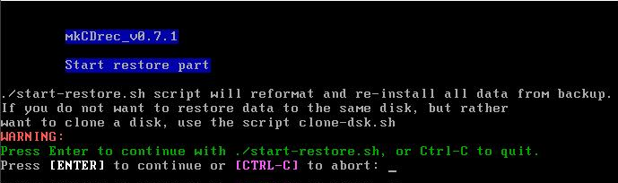
If you come across the following warning then mkCDrec was not able to guess your bootloader (lilo, grub, …). If you are working with the first console, then due to a bug in BusyBox shell it is not possible to type Control-C. To work-around that problem open second console with ALT-F2 and pressing Enter key.
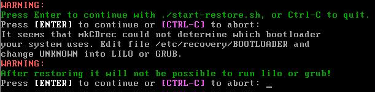
Find out what the pid is of start-restore.sh shell script and kill it.
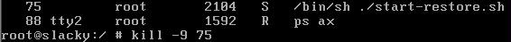
Go back to the first console (ALT-F1) and edit the BOOTLOADER file and replace the UNKNOWN keyword with LILO or GRUB. Thereafter, restart the start-restore.sh shell script again.
The restore is quite simple – just follow the questions.
Per disk a question will be asked to restore or not.
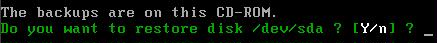
Another question is whether you want to reformat the disk if mkCDrec finds an existing partition table on it.
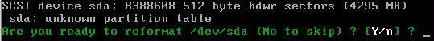
The reformat will wipe out the entire disk. There is no way back once done!
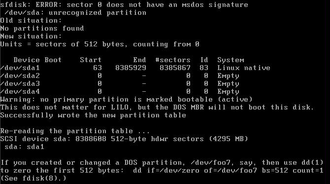
After reformatting the disk the partitions are ready for creating file systems on it.
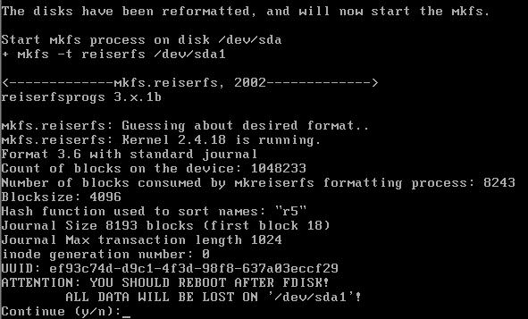
with some file system types, e.g. ReiserFS, a question may be asked.
Immediately after the creating of a file system on a partition it will get mounted and the restore starts in verbose mode. All the filenames will fly by quite quickly.
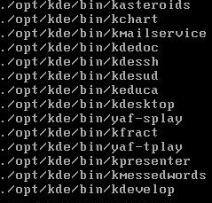
In case there are multiple CDs involved then you will see a message like the following when mkCDrec needs the next CD in sequence:
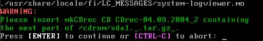
Once a partition has been restored it will get unmounted and a file system check will happen to check the integrity of it.
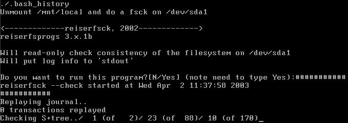
At the end when all disks and file systems have been restored mkCDrec will mount the / and /boot directory again to run lilo or grub. This is necessary to make the disk bootable again.
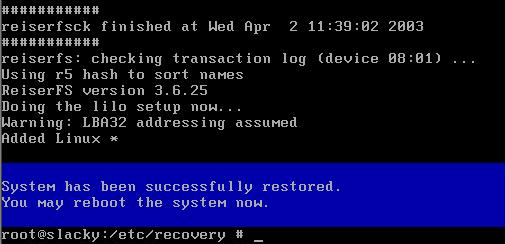
You should see a blue message when the restore went fine. Otherwise, you will see a red banner with some warnings for further inspections.
To reboot your system do the following:
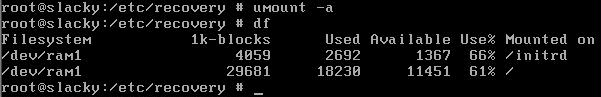
And, finally type, “reboot” after removing the CD-ROM.
If the restore went fine then the disk should be bootable as before…
If in Config.sh the option Automatic Disaster Recovery (AUTODR) was set to “y” then when you boot from the mkCDrec CD-ROM the start-restore.sh procedure will be started automatically (after a warning and an interruption possibility of 20 seconds).
Of course, when multiple CDs are involved the automatic restore will be interrupted when mkCDrec needs the next CD: